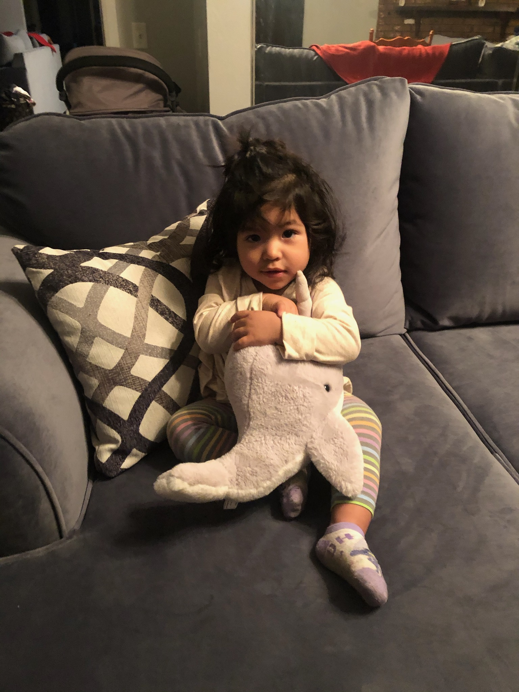
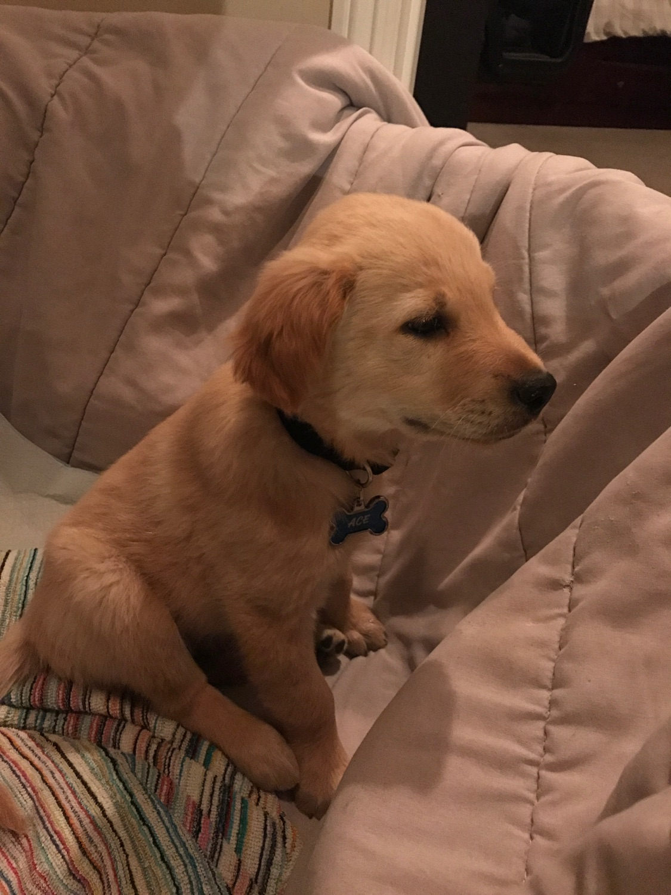
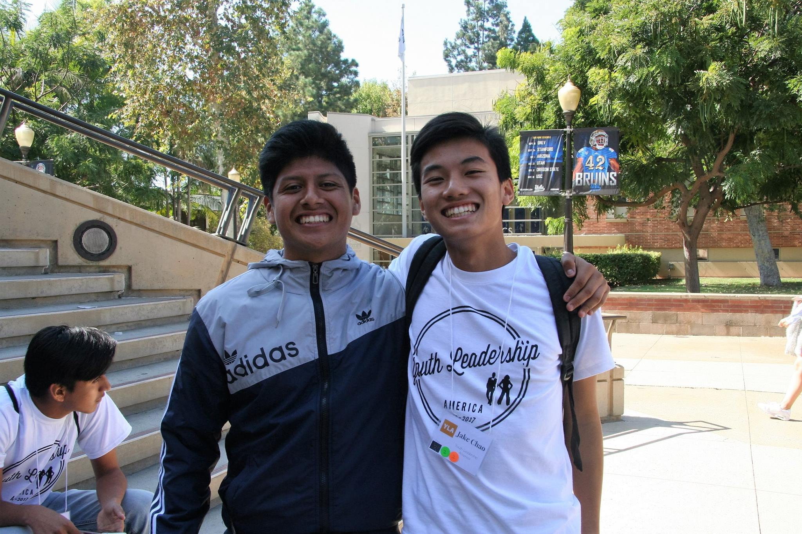
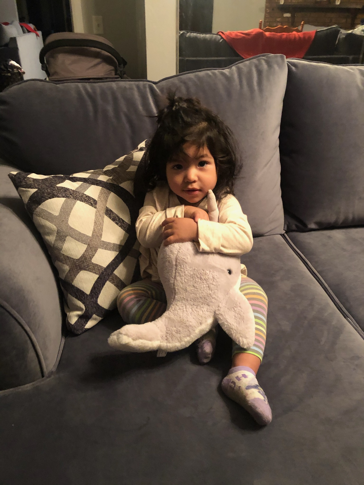
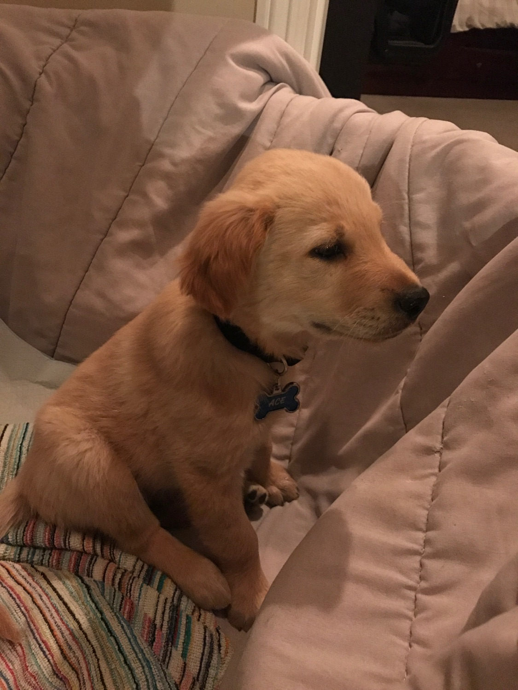
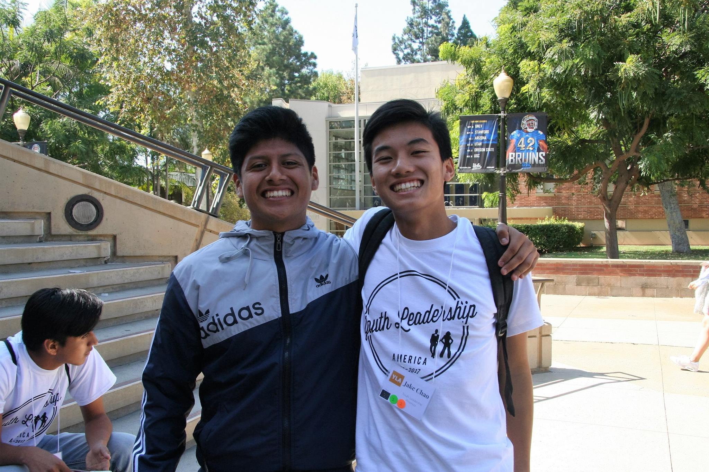

About Me
Welcome to my portfolio. My name is Ruben Sanchez. I am 20 years
old and currently living in Anaheim, California. I have three siblings
and two parents that I love. Lastly, I am a sophomore studying computer
science with a concentration in systems at Stanford University.
I owe a lot of my success to my friends and family who have shown constant support
in my struggles and triumphs. One aspect of my life that I thank them a lot for is
convincing me to pursue computer science as a major. I entered as a mathematics major
and had a lot of doubts about how it could translate to tangible success or interests
in the future. I thought a lot about switching to an engineering major and ultimately
decided on computer science. I'm glad I did.
Aside from computer science, I find interest in eSports, cooking, and guacamole. Fun
fact: I won Stanford's Annual Cooking Competition in my freshman year.
Projects
Below, you will find a list of projects I have worked on as coursework and self projects.
- Pintos Operating System
- Built a simple operating system framework for the 80x86 architecture. Supports kernel threads, running and loading user programs, a file system, and virtual memory management. Designed and implemented in C.
- Heap Allocator
- Built a dynamic memory allocator utilizing a doubly-linked segregated free list with coalescing. Designed and implemented in C.
- Landscape & Maintenance Simple CRM
- Built a web-application designed to streamline check payment processes and manage client data in specific consideration to the landscape & maintenance industry. Inspired by my own family landscaping business and implemented with HTML, Javascript, PHP, and MySQL.
Photo Gallery

 





I chose photos of lovely people and fond memories. I would prefer to share many more photos but don't want to overfill the portfolio.